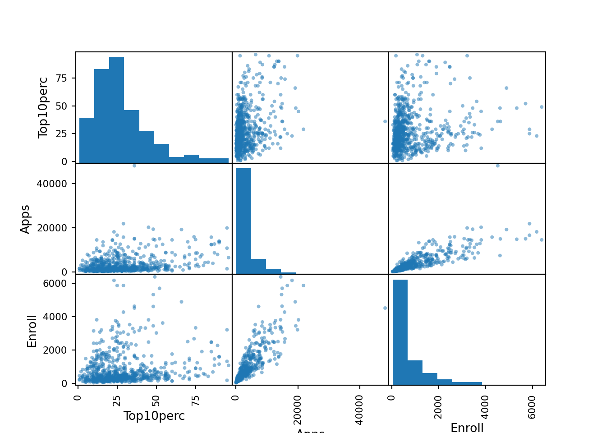

[1] "03_exercises.qmd" ".Rhistory" "03_main.qmd"
[4] "02_main.qmd" ".Rbuildignore" "examples.md"
[7] "07_exercises.qmd" "10_exercises.qmd" "_quarto.yml"
[10] "bookclub-islp.Rproj" "example_python.ipynb" "09_main.qmd"
[13] "08_main.qmd" "03_video.qmd" "06_notes.qmd"
[16] ".DS_Store" "12_notes.qmd" "08_video.qmd"
[19] "13_exercises.qmd" "04_exercises.qmd" "11_video.qmd"
[22] "05_video.qmd" "images" "13_main.qmd"
[25] "12_main.qmd" "01_notes.qmd" "02_video.qmd"
[28] "how-to.qmd" "ISLP_labs_R4DS" "example_quarto.qmd"
[31] "13_notes.qmd" "04_main.qmd" "07_notes.qmd"
[34] "05_main.qmd" "09_video.qmd" "06_notes.ipynb"
[37] "docs" "index.qmd" "04_video.qmd"
[40] "09_exercises.qmd" "10_video.qmd" "02_notes.qmd"
[43] "README.md" "some_array.npy" "08_exercises.qmd"
[46] ".gitignore" "figpath.png" "01_video.qmd"
[49] "04_notes.qmd" ".github" "style.css"
[52] "10_notes.qmd" "cover.png" "13_video.qmd"
[55] "07_video.qmd" "sidebars-toggle.html" "01_main.qmd"
[58] "09_notes.qmd" "03_notes.qmd" "07_main.qmd"
[61] "06_main.qmd" "05_exercises.qmd" ".git"
[64] "12_exercises.qmd" "02_exercises.rmarkdown" "data"
[67] "11_exercises.qmd" "06_exercises.qmd" "_freeze"
[70] "11_notes.qmd" ".Rproj.user" ".quarto"
[73] "ISLP_data" "05_notes.qmd" "02_exercises.qmd"
[76] "06_video.qmd" "10_main.qmd" "11_main.qmd"
[79] "12_video.qmd" "08_notes.qmd" Applied Exercises
8. This exercise relates to the College data set, which can be found in the file College.csv on the book website. It contains a number of variables for 777 different universities and colleges in the US. The variables are
Private: Public/private indicatorApps: Number of applications receivedAccept: Number of applicants acceptedEnroll: Number of new students enrolledTop10perc: New students from top 10 % of high school classTop25perc: New students from top 25 % of high school classF.Undergrad: Number of full-time undergraduatesP.Undergrad: Number of part-time undergraduatesOutstate: Out-of-state tuitionRoom.Board: Room and board costsBooks: Estimated book costsPersonal: Estimated personal spendingPhD: Percent of faculty with Ph.D.sTerminal: Percent of faculty with terminal degreeS.F.Ratio: Student/faculty ratioperc.alumni: Percent of alumni who donateExpend: Instructional expenditure per studentGrad.Rate: Graduation rate
Before reading the data into Python, it can be viewed in Excel or a text editor.
(a) Use the pd.read_csv() function to read the data into Python. Call the loaded data college. Make sure that you have the directory set to the correct location for the data.
Unnamed: 0 Private Apps Accept Enroll Top10perc \
0 Abilene Christian University Yes 1660 1232 721 23
1 Adelphi University Yes 2186 1924 512 16
2 Adrian College Yes 1428 1097 336 22
3 Agnes Scott College Yes 417 349 137 60
4 Alaska Pacific University Yes 193 146 55 16
.. ... ... ... ... ... ...
772 Worcester State College No 2197 1515 543 4
773 Xavier University Yes 1959 1805 695 24
774 Xavier University of Louisiana Yes 2097 1915 695 34
775 Yale University Yes 10705 2453 1317 95
776 York College of Pennsylvania Yes 2989 1855 691 28
Top25perc F.Undergrad P.Undergrad Outstate Room.Board Books \
0 52 2885 537 7440 3300 450
1 29 2683 1227 12280 6450 750
2 50 1036 99 11250 3750 400
3 89 510 63 12960 5450 450
4 44 249 869 7560 4120 800
.. ... ... ... ... ... ...
772 26 3089 2029 6797 3900 500
773 47 2849 1107 11520 4960 600
774 61 2793 166 6900 4200 617
775 99 5217 83 19840 6510 630
776 63 2988 1726 4990 3560 500
Personal PhD Terminal S.F.Ratio perc.alumni Expend Grad.Rate
0 2200 70 78 18.1 12 7041 60
1 1500 29 30 12.2 16 10527 56
2 1165 53 66 12.9 30 8735 54
3 875 92 97 7.7 37 19016 59
4 1500 76 72 11.9 2 10922 15
.. ... ... ... ... ... ... ...
772 1200 60 60 21.0 14 4469 40
773 1250 73 75 13.3 31 9189 83
774 781 67 75 14.4 20 8323 49
775 2115 96 96 5.8 49 40386 99
776 1250 75 75 18.1 28 4509 99
[777 rows x 19 columns](b) Look at the data used in the notebook by creating and running a new cell with just the code college in it. You should notice that the first column is just the name of each university in a column named something like Unnamed: 0. We don’t really want pandas to treat this as data. However, it may be handy to have these names for later. Try the following commands and similarly look at the resulting data frames:
This has used the first column in the file as an index for the data frame. This means that pandas has given each row a name corresponding to the appropriate university. Now you should see that the first data column is Private. Note that the names of the colleges appear on the left of the table. We also introduced a new python object above: a dictionary, which is specified by (key, value) pairs. Keep your modified version of the data with the following:
Private Apps Accept Enroll Top10perc \
college
Abilene Christian University Yes 1660 1232 721 23
Adelphi University Yes 2186 1924 512 16
Adrian College Yes 1428 1097 336 22
Agnes Scott College Yes 417 349 137 60
Alaska Pacific University Yes 193 146 55 16
... ... ... ... ... ...
Worcester State College No 2197 1515 543 4
Xavier University Yes 1959 1805 695 24
Xavier University of Louisiana Yes 2097 1915 695 34
Yale University Yes 10705 2453 1317 95
York College of Pennsylvania Yes 2989 1855 691 28
Top25perc F.Undergrad P.Undergrad Outstate \
college
Abilene Christian University 52 2885 537 7440
Adelphi University 29 2683 1227 12280
Adrian College 50 1036 99 11250
Agnes Scott College 89 510 63 12960
Alaska Pacific University 44 249 869 7560
... ... ... ... ...
Worcester State College 26 3089 2029 6797
Xavier University 47 2849 1107 11520
Xavier University of Louisiana 61 2793 166 6900
Yale University 99 5217 83 19840
York College of Pennsylvania 63 2988 1726 4990
Room.Board Books Personal PhD Terminal \
college
Abilene Christian University 3300 450 2200 70 78
Adelphi University 6450 750 1500 29 30
Adrian College 3750 400 1165 53 66
Agnes Scott College 5450 450 875 92 97
Alaska Pacific University 4120 800 1500 76 72
... ... ... ... ... ...
Worcester State College 3900 500 1200 60 60
Xavier University 4960 600 1250 73 75
Xavier University of Louisiana 4200 617 781 67 75
Yale University 6510 630 2115 96 96
York College of Pennsylvania 3560 500 1250 75 75
S.F.Ratio perc.alumni Expend Grad.Rate
college
Abilene Christian University 18.1 12 7041 60
Adelphi University 12.2 16 10527 56
Adrian College 12.9 30 8735 54
Agnes Scott College 7.7 37 19016 59
Alaska Pacific University 11.9 2 10922 15
... ... ... ... ...
Worcester State College 21.0 14 4469 40
Xavier University 13.3 31 9189 83
Xavier University of Louisiana 14.4 20 8323 49
Yale University 5.8 49 40386 99
York College of Pennsylvania 18.1 28 4509 99
[777 rows x 18 columns](c) Use the describe() method to produce a numerical summary of the variables in the data set.
Apps Accept Enroll Top10perc Top25perc \
count 777.000000 777.000000 777.000000 777.000000 777.000000
mean 3001.638353 2018.804376 779.972973 27.558559 55.796654
std 3870.201484 2451.113971 929.176190 17.640364 19.804778
min 81.000000 72.000000 35.000000 1.000000 9.000000
25% 776.000000 604.000000 242.000000 15.000000 41.000000
50% 1558.000000 1110.000000 434.000000 23.000000 54.000000
75% 3624.000000 2424.000000 902.000000 35.000000 69.000000
max 48094.000000 26330.000000 6392.000000 96.000000 100.000000
F.Undergrad P.Undergrad Outstate Room.Board Books \
count 777.000000 777.000000 777.000000 777.000000 777.000000
mean 3699.907336 855.298584 10440.669241 4357.526384 549.380952
std 4850.420531 1522.431887 4023.016484 1096.696416 165.105360
min 139.000000 1.000000 2340.000000 1780.000000 96.000000
25% 992.000000 95.000000 7320.000000 3597.000000 470.000000
50% 1707.000000 353.000000 9990.000000 4200.000000 500.000000
75% 4005.000000 967.000000 12925.000000 5050.000000 600.000000
max 31643.000000 21836.000000 21700.000000 8124.000000 2340.000000
Personal PhD Terminal S.F.Ratio perc.alumni \
count 777.000000 777.000000 777.000000 777.000000 777.000000
mean 1340.642214 72.660232 79.702703 14.089704 22.743887
std 677.071454 16.328155 14.722359 3.958349 12.391801
min 250.000000 8.000000 24.000000 2.500000 0.000000
25% 850.000000 62.000000 71.000000 11.500000 13.000000
50% 1200.000000 75.000000 82.000000 13.600000 21.000000
75% 1700.000000 85.000000 92.000000 16.500000 31.000000
max 6800.000000 103.000000 100.000000 39.800000 64.000000
Expend Grad.Rate
count 777.000000 777.00000
mean 9660.171171 65.46332
std 5221.768440 17.17771
min 3186.000000 10.00000
25% 6751.000000 53.00000
50% 8377.000000 65.00000
75% 10830.000000 78.00000
max 56233.000000 118.00000 (d) Use the pd.plotting.scatter_matrix() function to produce a scatterplot matrix of the first columns [Top10perc, Apps, Enroll]. Recall that you can reference a list C of columns of a data frame A using A[C].
#fig, ax = subplots(figsize=(8, 8))
pd.plotting.scatter_matrix(college[['Top10perc','Apps','Enroll']])array([[<AxesSubplot:xlabel='Top10perc', ylabel='Top10perc'>,
<AxesSubplot:xlabel='Apps', ylabel='Top10perc'>,
<AxesSubplot:xlabel='Enroll', ylabel='Top10perc'>],
[<AxesSubplot:xlabel='Top10perc', ylabel='Apps'>,
<AxesSubplot:xlabel='Apps', ylabel='Apps'>,
<AxesSubplot:xlabel='Enroll', ylabel='Apps'>],
[<AxesSubplot:xlabel='Top10perc', ylabel='Enroll'>,
<AxesSubplot:xlabel='Apps', ylabel='Enroll'>,
<AxesSubplot:xlabel='Enroll', ylabel='Enroll'>]], dtype=object)
(e) Use the boxplot() method of college to produce side-by-side boxplots of Outstate versus Private.
(f) Create a new qualitative variable, called Elite, by binning the Top10perc variable into two groups based on whether or not the proportion of students coming from the top 10% of their high school classes exceeds 50%.
Use the value_counts() method of college['Elite'] to see how many elite universities there are. Finally, use the boxplot() method again to produce side-by-side boxplots of Outstate versus Elite.
(g) Use the plot.hist() method of college to produce some histograms with difering numbers of bins for a few of the quantitative variables. The command plt.subplots(2, 2) may be useful: it will divide the plot window into four regions so that four plots can be made simultaneously. By changing the arguments you can divide the screen up in other combinations.
(h) Continue exploring the data, and provide a brief summary of what you discover.
9. This exercise involves the Auto data set studied in the lab. Make sure that the missing values have been removed from the data.
mpg cylinders displacement horsepower weight acceleration year \
0 18.0 8 307.0 130.0 3504 12.0 70
1 15.0 8 350.0 165.0 3693 11.5 70
2 18.0 8 318.0 150.0 3436 11.0 70
3 16.0 8 304.0 150.0 3433 12.0 70
4 17.0 8 302.0 140.0 3449 10.5 70
.. ... ... ... ... ... ... ...
392 27.0 4 140.0 86.0 2790 15.6 82
393 44.0 4 97.0 52.0 2130 24.6 82
394 32.0 4 135.0 84.0 2295 11.6 82
395 28.0 4 120.0 79.0 2625 18.6 82
396 31.0 4 119.0 82.0 2720 19.4 82
origin name
0 1 chevrolet chevelle malibu
1 1 buick skylark 320
2 1 plymouth satellite
3 1 amc rebel sst
4 1 ford torino
.. ... ...
392 1 ford mustang gl
393 2 vw pickup
394 1 dodge rampage
395 1 ford ranger
396 1 chevy s-10
[397 rows x 9 columns](a) Which of the predictors are quantitative, and which are qualitative?
Mpg, Displacement, Horsepower, Weight and Acceleration are quantitative. Cylinders, Year, Origin, and Name are qualitative.
<class 'pandas.core.frame.DataFrame'>
RangeIndex: 397 entries, 0 to 396
Data columns (total 9 columns):
# Column Non-Null Count Dtype
--- ------ -------------- -----
0 mpg 397 non-null float64
1 cylinders 397 non-null int64
2 displacement 397 non-null float64
3 horsepower 392 non-null float64
4 weight 397 non-null int64
5 acceleration 397 non-null float64
6 year 397 non-null int64
7 origin 397 non-null int64
8 name 397 non-null object
dtypes: float64(4), int64(4), object(1)
memory usage: 28.0+ KB(b) What is the range of each quantitative predictor? You can answer this using the min() and max() methods in numpy.
mpg_min = Auto['mpg'].min( )
mpg_max = Auto['mpg'].max( )
print('The min and max miles per gallon are', (mpg_min, mpg_max))The min and max miles per gallon are (9.0, 46.6)dsp_min = Auto['displacement'].min( )
dsp_max = Auto['displacement'].max( )
print('The min and max displacement are', (dsp_min, dsp_max))The min and max displacement are (68.0, 455.0)hpwr_min = Auto['horsepower'].min( )
hpwr_max = Auto['horsepower'].max( )
print('The min and max horsepower are', (hpwr_min, hpwr_max))The min and max horsepower are (46.0, 230.0)(c) What is the mean and standard deviation of each quantitative predictor?
mpg_mean = Auto['mpg'].mean( )
mpg_sd = Auto['mpg'].std( )
print('The mean and standard deviation of miles per gallon are', mpg_mean,'and', mpg_sd)The mean and standard deviation of miles per gallon are 23.515869017632248 and 7.825803928946562dsp_mean = Auto['displacement'].mean( )
dsp_sd = Auto['displacement'].std( )
print('The mean and standard deviation of weight are', dsp_mean,'and', dsp_sd)The mean and standard deviation of weight are 193.53274559193954 and 104.37958329992945hpwr_mean = Auto['horsepower'].mean( )
hpwr_sd = Auto['horsepower'].std( )
print('The mean and standard deviation of horsepower are', hpwr_mean,'and', hpwr_sd)The mean and standard deviation of horsepower are 104.46938775510205 and 38.49115993282855(d) Now remove the 10th through 85th observations. What is the range, mean, and standard deviation of each predictor in the subset of the data that remains?
mpg cylinders displacement horsepower weight acceleration year \
0 18.0 8 307.0 130.0 3504 12.0 70
1 15.0 8 350.0 165.0 3693 11.5 70
2 18.0 8 318.0 150.0 3436 11.0 70
3 16.0 8 304.0 150.0 3433 12.0 70
4 17.0 8 302.0 140.0 3449 10.5 70
.. ... ... ... ... ... ... ...
392 27.0 4 140.0 86.0 2790 15.6 82
393 44.0 4 97.0 52.0 2130 24.6 82
394 32.0 4 135.0 84.0 2295 11.6 82
395 28.0 4 120.0 79.0 2625 18.6 82
396 31.0 4 119.0 82.0 2720 19.4 82
origin name
0 1 chevrolet chevelle malibu
1 1 buick skylark 320
2 1 plymouth satellite
3 1 amc rebel sst
4 1 ford torino
.. ... ...
392 1 ford mustang gl
393 2 vw pickup
394 1 dodge rampage
395 1 ford ranger
396 1 chevy s-10
[322 rows x 9 columns]mpg_min = Auto_new['mpg'].min( )
mpg_max = Auto_new['mpg'].max( )
print('The min and max miles per gallon of the subsetted data are', (mpg_min, mpg_max))The min and max miles per gallon of the subsetted data are (11.0, 46.6)mpg_mean = Auto_new['mpg'].mean( )
mpg_sd = Auto_new['mpg'].std( )
print('The mean and standard deviation of miles per gallon of the subsetted data are', mpg_mean,'and', mpg_sd)The mean and standard deviation of miles per gallon of the subsetted data are 24.40931677018633 and 7.913357147165568dsp_min = Auto_new['displacement'].min( )
dsp_max = Auto_new['displacement'].max( )
print('The min and max displacement of the subsetted data are', (dsp_min, dsp_max))The min and max displacement of the subsetted data are (68.0, 455.0)dsp_mean = Auto_new['displacement'].mean( )
dsp_sd = Auto_new['displacement'].std( )
print('The mean and standard deviation of weight of the subsetted data are', dsp_mean,'and', dsp_sd)The mean and standard deviation of weight of the subsetted data are 187.6801242236025 and 100.12092459330134hpwr_min = Auto['horsepower'].min( )
hpwr_max = Auto['horsepower'].max( )
print('The min and max horsepower of the subsetted data are', (hpwr_min, hpwr_max))The min and max horsepower of the subsetted data are (46.0, 230.0)hpwr_mean = Auto['horsepower'].mean( )
hpwr_sd = Auto['horsepower'].std( )
print('The mean and standard deviation of horsepower of the subsetted data are', hpwr_mean,'and', hpwr_sd)The mean and standard deviation of horsepower of the subsetted data are 104.46938775510205 and 38.49115993282855wt_min = Auto['weight'].min( )
wt_max = Auto['weight'].max( )
print('The min and max weights of the subsetted data are', (wt_min, wt_max))The min and max weights of the subsetted data are (1613, 5140)wt_mean = Auto['weight'].mean( )
wt_sd = Auto['weight'].std( )
print('The mean and standard deviation of weight of the subsetted data are', wt_mean,'and', wt_sd)The mean and standard deviation of weight of the subsetted data are 2970.2619647355164 and 847.9041194897246acc_min = Auto['acceleration'].min( )
acc_max = Auto['acceleration'].max( )
print('The min and max accelerations of the subsetted data are', (acc_min, acc_max))The min and max accelerations of the subsetted data are (8.0, 24.8)acc_mean = Auto['acceleration'].mean( )
acc_sd = Auto['acceleration'].std( )
print('The mean and standard deviation of acceleration of the subsetted data are', acc_mean,'and', acc_sd)The mean and standard deviation of acceleration of the subsetted data are 15.555667506297214 and 2.7499952929761515(e) Using the full data set, investigate the predictors graphically, using scatterplots or other tools of your choice. Create some plots highlighting the relationships among the predictors. Comment on your findings.
(f) Suppose that we wish to predict gas mileage (mpg) on the basis of the other variables. Do your plots suggest that any of the other variables might be useful in predicting mpg? Justify your answer.
10. This exercise involves the Boston housing data set.
(a) To begin, load in the Boston data set, which is part of the ISLP library.
crim zn indus chas nox rm age dis rad tax \
0 0.00632 18.0 2.31 0 0.538 6.575 65.2 4.0900 1 296
1 0.02731 0.0 7.07 0 0.469 6.421 78.9 4.9671 2 242
2 0.02729 0.0 7.07 0 0.469 7.185 61.1 4.9671 2 242
3 0.03237 0.0 2.18 0 0.458 6.998 45.8 6.0622 3 222
4 0.06905 0.0 2.18 0 0.458 7.147 54.2 6.0622 3 222
.. ... ... ... ... ... ... ... ... ... ...
501 0.06263 0.0 11.93 0 0.573 6.593 69.1 2.4786 1 273
502 0.04527 0.0 11.93 0 0.573 6.120 76.7 2.2875 1 273
503 0.06076 0.0 11.93 0 0.573 6.976 91.0 2.1675 1 273
504 0.10959 0.0 11.93 0 0.573 6.794 89.3 2.3889 1 273
505 0.04741 0.0 11.93 0 0.573 6.030 80.8 2.5050 1 273
ptratio lstat medv
0 15.3 4.98 24.0
1 17.8 9.14 21.6
2 17.8 4.03 34.7
3 18.7 2.94 33.4
4 18.7 5.33 36.2
.. ... ... ...
501 21.0 9.67 22.4
502 21.0 9.08 20.6
503 21.0 5.64 23.9
504 21.0 6.48 22.0
505 21.0 7.88 11.9
[506 rows x 13 columns]